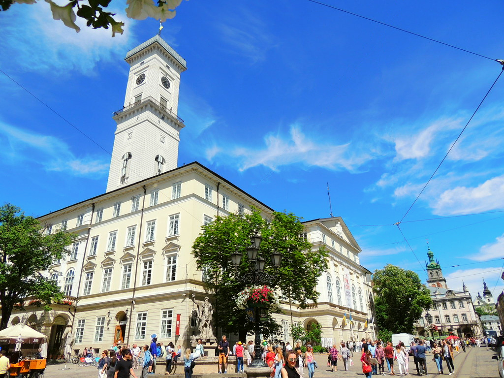
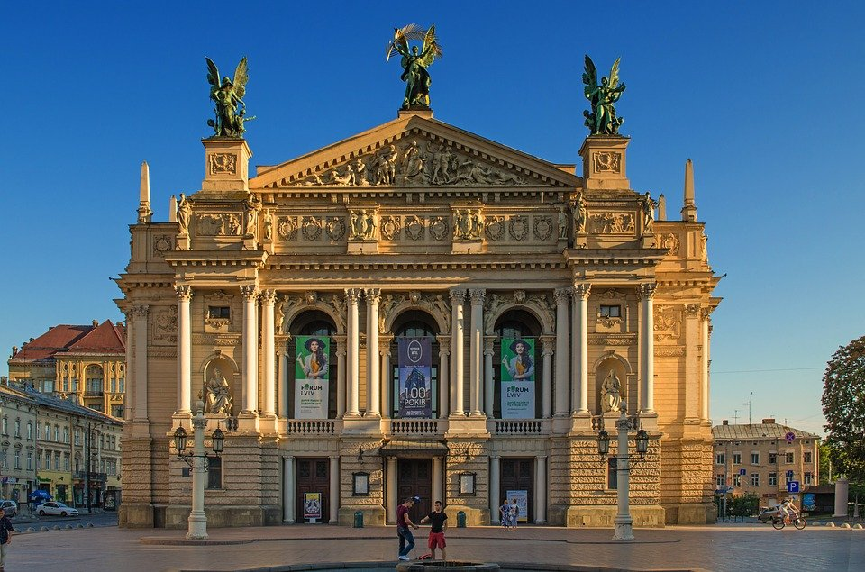
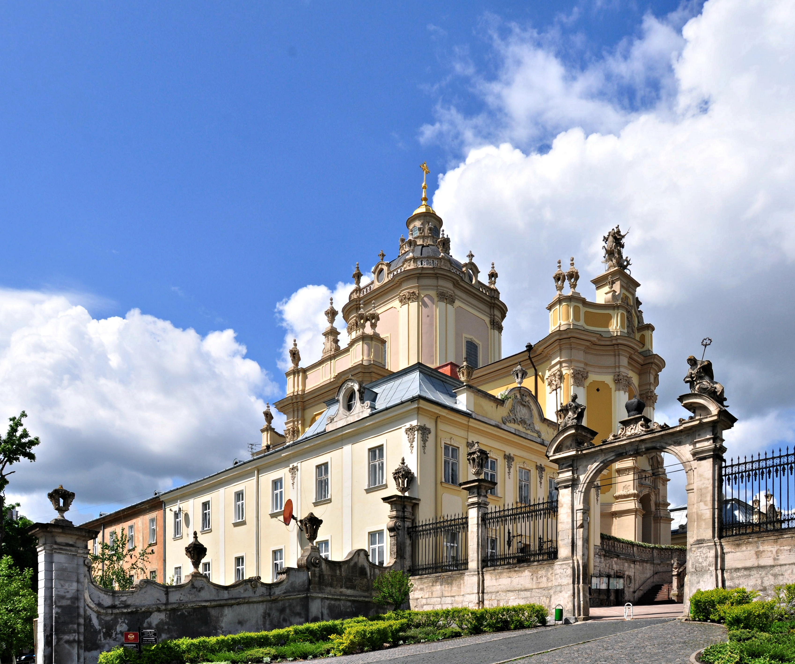

Визначні пам'ятки Львова
Визначні пам'ятки Львова — це унікальний ансамбль історії та архітектури, внесений до Спадщини ЮНЕСКО.
Площа ринок та ратуша

Площа Ринок та Ратуша — серце старого міста, оточене 44 старовинними кам'яницями, з оглядового майданчика вежі якого відкривається панорамний вид на дахи Львова.
Оперний театр імені Соломії Крушельницької

Оперний театр імені Соломії Крушельницької — архітектурна перлина у стилі неоренесансу та бароко, що вражає пишним фасадом і розкішним внутрішнім оздобленням.
Високий Замок
Високий Замок — найвища точка міста, звідки відкривається найкраща широка панорама на старовинний та сучасний Львів.
Собор Святого Юра

Собор Святого Юра — величавий бароковий комплекс, який слугує головним греко-католицьким храмом міста.